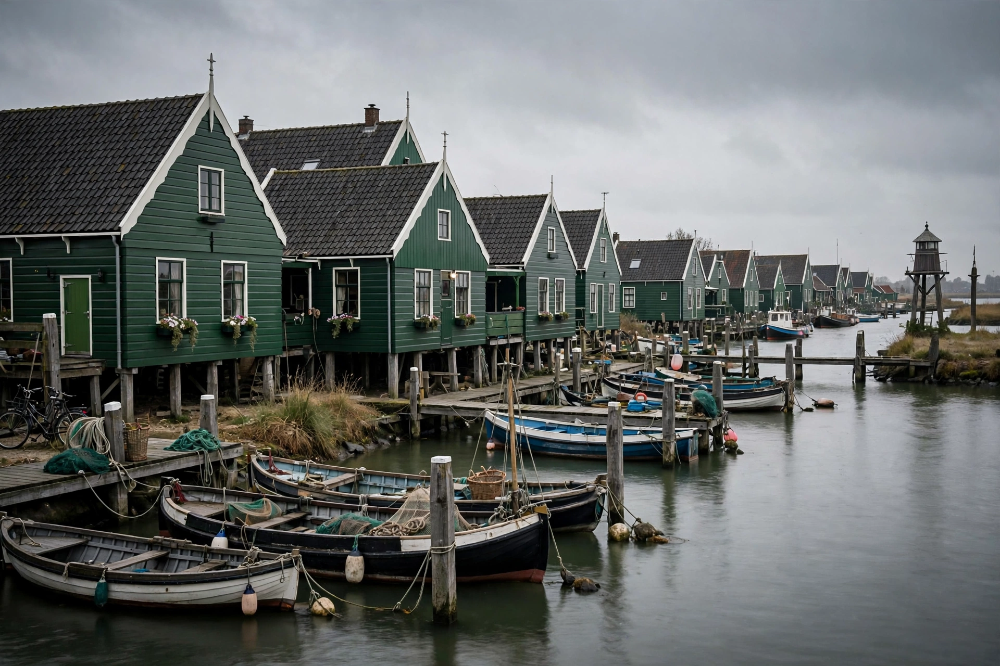

Marken
| Marken | |
|---|---|
 | |
| Country | Netherlands |
| Province | North Holland |
| Municipality | Waterland |
| Population | approx. 1,700 |
| Postcode | 1156 |
Marken (Dutch pronunciation: [ˈmɑrkə(n)]) is a village in the municipality of Waterland in the province of North Holland, Netherlands. It had a population of about 1,700 as of recent counts. Marken forms a peninsula in the Markermeer and was formerly an island in the Zuiderzee. It is known for its characteristic wooden houses and its traditional costume, still worn by some residents on special occasions.
History
Marken was separated from the mainland in the 13th century by a storm surge and remained an isolated fishing community for centuries. Its inhabitants were predominantly Protestant, in contrast to largely Catholic neighbouring villages such as Volendam. As an island community dependent on fishing, Marken was repeatedly threatened by flooding; many of its houses were built on artificial mounds (terpen) or on stilts, so that floodwater could pass beneath. The completion of the Afsluitdijk in 1932 converted the Zuiderzee into the freshwater IJsselmeer and ended the island's herring fishery, while the construction of a causeway in 1957 connected Marken permanently to the mainland.
Tourism and culture
Today Marken is a popular tourist destination, reachable by road and by ferry from Volendam. Attractions include the Marker Museum, the wooden shoe factory, and the lighthouse Het Paard van Marken ("The Horse of Marken"), built in 1839 at the eastern tip of the peninsula. The village's traditional costume — with its distinctive striped aprons and, for men, silver buttons — is among the best known of Dutch folk dress.
See also
References
Statistics Netherlands (CBS), population figures for Marken, municipality of Waterland.